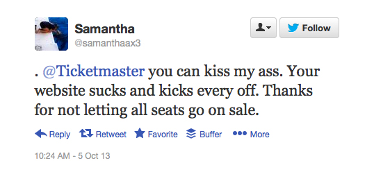
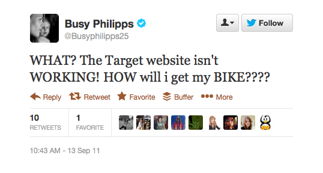
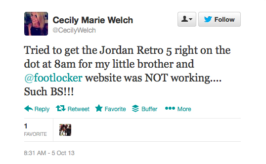
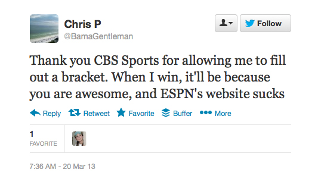
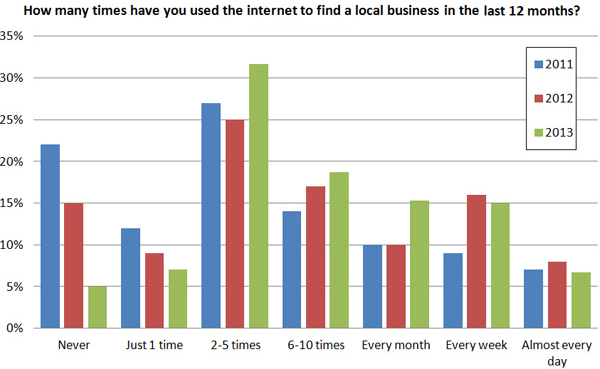
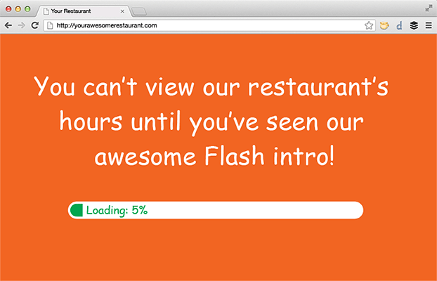

Shannon Mølhave
Senior Web Designer

We are NOT a b***.
The success of your website is determined only by those who use it.
FAIL


UX can make or break your
digital marketing.




10 Ways to Improve your Website's User Experience
1. Get rid of Flash
Why the Flash hate?
No SEO opportunities

Source: BrightLocal - http://www.brightlocal.com/2013/06/25/local-consumer-review-survey-2013
No iOS access
Frustrates users

2. Identify user goals

User Goals vs. Business Goals
- browse products
- find prices
- order online
- find phone number
- sell products
- promote a sale
- get repeat customers
- promote line of credit
3. Prioritize content
4. Differentiate from competitors
How will the user benefit by choosing your client?
5. Define a CTA
Have no more than 2-3 CTAs on a page (preferably 1).
6. Be intuitive
If the largest item on your homepage isn't clickable, you're doing it wrong.
Part of being intuitive is being consistent.
Follow best practices.
- Such as…
- Use a horizontal main navigation bar.
- Place logo in the header and link it back to the homepage.
- Make links blue and/or underlined (blame Google).
(Did I mention be consistent?)
You are not your target audience.
-Mackenzie Fogelson
7. No jargon
OMG ems are such a pain, amirite??
#wut
Have someone outside your client's industry read through your content.
We're awesome at leveraging our synergistic innovativeness by thinking outside the box.
#puke
No generic stock photos.
If the image isn't adding value to the content it's better to just leave it out.
Good Content = Good SEO
8. Cut down text
People skim text online. Be short and to the point.
The last decade has seen a tremendous increase in the availability of detailed and thus massive terrain data, mainly due to advances in mapping technologies such as airborne LIDAR. The full potential of the detailed data is not being utilized because most current software applications have problems handling the massive data sets. SCALGO software eliminates these problems and unlocks the full potential of the detailed data. The problems of most current software stem from the use of inefficient algorithms, and they often result in cumbersome workflows (i.e. the need for breaking data into tiles for individual processing and with subsequent tile-reintegration complications), ill-specified output (e.g. because of the need for use of heuristic solutions) and/or use of only part of the available data (e.g. because detailed data has to be coarsened/thinned to make it small enough to be processed). SCALGO technology utilizes novel mathematical and algorithmic techniques, which are a result of more than two decades of basic and applied research on handling massive datasets. As a result, the unique advantages of SCALGO software include: efficient handling of massive terrain datasets even on a normal workstation, proven efficiency on all datasets independent of exact input data configuration, facilitating the use of full-resolution data, avoiding problems such as data thinning, simplifying the workflow for example by removing the need for data tiling, and delivering fully-specified output leading to more reliable results.
Our Advantages
The last decade has seen a tremendous increase in the availability of detailed and thus massive terrain data, mainly due to advances in mapping technologies such as airborne LIDAR. The full potential of the detailed data is not being utilized because most current software applications have problems handling the massive data sets. SCALGO software eliminates these problems and unlocks the full potential of the detailed data.
Problems
The problems of most current software stem from the use of inefficient algorithms, and they often result in cumbersome workflows (i.e. the need for breaking data into tiles for individual processing and with subsequent tile-reintegration complications), ill-specified output (e.g. because of the need for use of heuristic solutions) and/or use of only part of the available data (e.g. because detailed data has to be coarsened/thinned to make it small enough to be processed).
SCALGO solution
SCALGO technology utilizes novel mathematical and algorithmic techniques, which are a result of more than two decades of basic and applied research on handling massive datasets. As a result, the unique advantages of SCALGO software include:
- Efficient handling of massive terrain datasets even on a normal workstation.
- Proven efficiency on all datasets independent of exact input data configuration.
- Facilitating the use of full-resolution data, avoiding problems such as data thinning.
- Simplifying the workflow for example by removing the need for data tiling.
- Delivering fully-specified output leading to more reliable results.
If you're using anything under 14 pixel font, you're bad and you should feel bad.
-Jacob Taylor
9. Improve link text
Accomplishes 3 things:
1. Shortens text
Click here to place your furniture order today!
vs.
Place your furniture order today!
2. SEO friendly
Google <3's link text.
3. Gives the user more information
People like knowing what will happen
before they click.
10. Consider your mobile and touchscreen users
91% of Americans own a cell phone. (May 2013)
55% of those owners consider their phone a smartphone. (Jun. 2013)
Source: Pew Internet - http://pewinternet.org/Commentary/2012/February/Pew-Internet-Mobile.aspx
http://pewinternet.org/Reports/2013/Smartphone-Ownership-2013.aspx
Blogs to follow
Be mobile friendly
- Allow for "fat finger" navigation with bigger buttons.
- Give links breathing room to avoid accidental clicks.
- Don't use Flash (again).
- Don't hide content, like menus, under a "hover."
How to improve UX
- Get rid of Flash
- Identify user goals
- Prioritize content
- Differentiate from competitors
- Define a CTA
- Be intuitive
- No jargon
- Cut down text
- Improve link text
- Consider mobile and touchscreen users
Using websites should be:
…as comfortable, painless…and as delightful as possible.
-Aral Balkan
The key to good UX is to empathize with your audience.
Thank you!